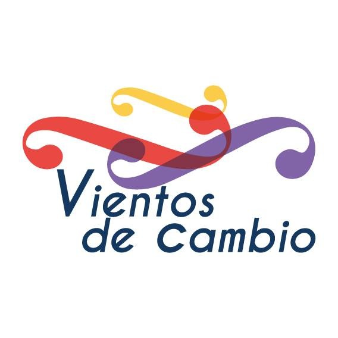

El Proyecto "Vientos de Cambio" surge como una necesidad de brindar a los niños, adolescente y adultos
de la comuinidad escolar de la E.E.P. Nº 155"Mtra Narcisa P. de Juàrez"
un espacio para el desarrollo integral a travès de la mùsica.
Los objetivos del proyecto son la inclusiòn social, fortaleciendo
en sentido de pertenencia, mejorando la asistencia a clases,
estimulando la creatividad y el buen gusta a travès de la eseñanza de la mùsica.
El proyecto nace el 11 de noviembre de 2007, con clases de mùsica, en donde se enseña
teorìa musical, instrumentos de vientops y percusiòn. Comienza como banda de mùsica
y el 6 de septiembre de 2008 hace su primera presentaciòn en público en el encuentro
de danzas españolas en el teatro Ateneo de Pcia Roque sàenz Peña, invitados por la
Señora alicia Gaña. En el 2010 se comienza a dar clases de cuerdas
(violín, violonchelo, contrabajo, viola)exactamente en el mes de noviembre.
Desde ese momento se trasforma el conjunto en Orquesta.
En sus inicios comienza con 9 alumnos. Actualmente cuenta, la escuela de mùsica, con 82 alumnos,
y la orquesta està compuesta por 50 integrantes.
Actualmente cuenta con un programa de voluntariado internacional
de musica, que consiste en la visita de jòvenes de distintos paìses del mundo
de orquestas profesionales, que viene a dictar clases de mùsica,
quedàndose tres meses en la cuidad. Eso ha permitido el crecimiento de la escuela y la orquesta.

 {% endif %}
{% endfor %}
{% endif %}
{% endfor %}